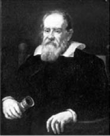
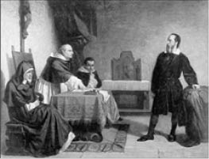
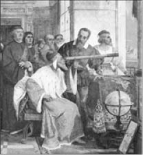

Galileo Galilei, Ressam Justus Sustermans, 1636
Galileo Galilei (1564-1642)
“Dünya, ne derseniz deyin, her şeye rağmen, size rağmen dönmektedir.”
1564-1642 yılları arasında yaşayan Galileo Galilei, fizik, matematik ve astronomi gibi konularda çok önemli çalışmalar yapmıştır. Teleskobu gökyüzünü incelemek için kullanan ilk biliminsanı olan Galileo, bu sayede pek çok yıldızın varlığını keşfetti. Kepler ve Kopernik’in savunduğu “Dünya’nın kendi etrafında ve Güneş’in etrafında döndüğü” görüşüne katılmasından dolayı Engizisyon Mahkemesi’yle başı derde girdi. Sidereus Nuncius (Yıldızların Habercisi), Dialogo Sopra i Due Massimi Sistemi del Mondo, Ptolemaico e Copernicano (İki Büyük Yer Sistemi, Ptolemaios ve Kopernik Sistemleri Üzerine Konuşmalar) adlı kitapları bilim tarihinin başyapıtları arasında yer aldı.
Geveze bir adam, bu derece meşgul ve önemli buluşlara imza atan ünlü bilginle kulakları normalden biraz büyükçe olduğu için dalga geçmek ister:
“Üstat, kulaklarınız bir insan için fazlaca büyük değil mi?” diye sorar.
Galileo yaptığı işten başını kaldırarak adamı süzdükten sonra yeniden işine dönerek şu yanıtı verir:
“Evet, benim kulaklarım bir insan için biraz fazlaca büyük, ama seninkiler de bir eşek için fazlaca küçük sayılmaz mı?”
Yaşamının son yıllarını Floransa yakınlarında Arcetri’deki evinde, Engizisyon Mahkemesi’nin verdiği ev hapsi cezasıyla geçiren Galileo Galilei, bu dönemde gözleri görmemesine rağmen bilimle olan uğraşısını son nefesine kadar sürdürmüştür. Yaşının bir hayli ilerlediği, bu nedenle artık dinlenmesi gerektiği söylendiğinde ünlü fizikçi şöyle cevap verdi:
“Ben sekiz-on yaşlarında olduğumu sanıyorum. Bu söylediğim, yaşayacağımı umduğum senelerdir, daha küçük yaşlarda da olabilirim. Ama eğer geçen yılların sayısını soruyorsanız tükenmiş olan şeyler artık sizin değildir, saymaya değmez. Siz önünüzde duran ömrünüz kadar varsınız, bu sebeple geçmişle değil şu an ve gelecekle ilgilenmelisiniz.”
Mahkeme ayrıca ünlü bilgine, insanların önünde, dünyanın dönüşüyle ilgili düşüncelerinden vazgeçtiğini açıklayan yazıyı okuttu. Çalışmalarına devam edebilmek için, mahkemenin baskısından kurtulmak amacıyla, bu yazıyı okuyan Galileo, ardından kısık bir sesle şöyle der:

Galileo Engizisyon Mahkemesi’nde, Ressam Cristiano Banti, 1857
”Dünya ne derseniz deyin, her şeye rağmen, size rağmen dönmektedir.”
Epik tiyatronun kurucusu, oyun yazarı Bertolt Brecht’in (1898-1956) Galileo’nun yaşam öyküsünü çarpıcı bir şekilde anlatan oyununun ilk sahnesinden küçük bir bölüm:
1609 yılında, Padova’da Bilim alevi parladı küçük bir odada Şunu söyledi Galileo Galilei Güneş duruyor olduğu yerde Dünya dönüyor çevresinde
(Padova’da Galileo’nun yoksul çalışma odası. Sabah. Ev işlerine bakan kadının oğlu Andrea bir bardak sütle çörek getirir. Galileo, keyifli, giyinmektedir.)
Galileo: Masanın üstüne koy sütü; kitaplara dokunma sakın.
Andrea: Sütçü parasını istiyormuş, annem dedi, vermezsek bir daha uğramayacakmış.
Galileo: (Ptolema sisteminin bir maketini gösterir.) Bak ne var orda?
Andrea: Nedir bu?
Galileo: Eskilere göre gökyüzünün haritası. Dünyanın çevresinde yıldızların nasıl döndüğünü gösteriyor.
Andrea: Nasıl?
Galileo: İnceleyelim bakalım. Ne görüyorsun? Andrea: Burada “Güneş” yazıyor. İçerdeki çemberde“Ay”.
Galileo: O çemberler saydam, kristal küreleri gösteriyor. Andrea: Nasıl?
Galileo: İç içe çok büyük sabun köpükleri düşün. Yıldızlar bu cam kürelere tutturulmuş. Şimdi yürüt bakalım güneşi.
Andrea: (Yürütür.) Ne güzel!
Galileo: Tam oradaki topu görüyor musun?
Andrea: Evet.
Galileo: O da dünya işte. İki bin yıldır insanlar, güneşin ve bütün yıldızların dünyanın çevresinde döndüğüne inanmışlar. Papa, kardinaller, prensler, bilginler, kaptanlar, tüccarlar, balıkçılar, öğrenciler hep buna inanmışlar. Yıldızlar çevremizde dönüp duruyor, bizler de bu cam yuvarlaklar içinde kımıldamadan oturuyormuşuz.
Andrea: Sıkışıp kalmışız.
Galileo: Hah!
Andrea: Kafeste gibi.
Galileo: Bana da öyle gelmişti bunu ilk gördüğümde. Ama şimdi çıkıyoruz bu delikten Andrea. Büyük bir hızla çıkıyoruz hem de. Geçti artık. Yeni bir çağ başlıyor. Yüz yıldır bir şeyler bekliyor gibiydi insanlık. “Böyle gelmiş ama, böyle gitmez” deniyor şimdi. Bence gemilerle başladı bu iş. Öteden beri insanlar hep kıyı kıyı gitmişler, derken bir gün, veryansın etmişler, bırakıp kıyıları açılmışlar büyük denizlere. Sonra bir haber yayılmış eski dünyamıza: Yeni dünyalar bulundu. Şimdi gülüyoruz, “Korktuğumuz okyanus küçücük bir gölmüş meğer” diyoruz. Her şeyin nedenini öğrenmek istiyoruz. Attığımız taş neden yere düşer, bilmek istiyoruz. Gün geçmiyor ki yeni bir şeyler bulunmasın. Siena’da görmüştüm bir gün -çok gençtim daha- yapı ustaları tartışıyorlardı. Koca bir granit parçasını kaldırmaları gerekiyordu. Zorlanıyorlardı. İçlerinden biri işi kolaylaştırmak için makaralarla iplerin değişik bir biçimde düzenlenmesini öneriyordu. Beş dakika tartıştılar ve hemen oracıkta bin yıldır kullanılan yöntemi bırakıp yenisine geçtiler. Yeni bir çağa girdiğimizi ilk o zaman anladım işte. Eski kitaplarda yazılanlar yetmiyor artık. Bin yıldır tahtında oturan inanç, yerini kuşkuya bıraktı şimdi. “Güzel” diyoruz, kitaplar öyle yazı-32 yor ama, bir de biz görelim. Bakalım yazılanlar doğru mu? Bir yel üfürdü Andrea. Prenslerin, din adamlarının altın işlemeli ayakları havalandı. Tombul bacaklar, sıska bacaklar çıktı ortaya, tıpkı bizim bacaklarımız gibi. Görürsün bak, çok yakında gökbilim çarşıda pazarda tartışılacak. Balıkçıların çocukları okula gidecek. Düşmesin diye yıldızlar yuvarlaklara çakılıymış, öyle mi? Yüreklilik gösterip boşluğa salıveriyoruz artık onları, hiçbir şeye tutunmadan almış başlarını gidiyorlar. Yeryüzü de sevinçle dönüyor güneşin çevresinde. Balıkçılar, tüccarlar, prensler, kardinaller de birlikte. Papa bile.
Andrea: Bu dönme işine aklım ermiyor.
Galileo: Dün anlatmıştım sana.
Andrea: Evet, ama, çok zor. Ben daha ekimde on birime basacağım, nasıl anlarım?
Galileo: Ben özellikle senin anlamanı istiyorum. Senin gibilerin de anlayabilmesi için çalışıyorum. Onun için alıyorum bu pahalı kitapları. Sütçünün parasını verirdim yoksa.
Andrea: Gözlerime mi inanayım, size mi? Güneş akşamları başka yerde, sabah başka. Yer değiştirdiğini görüyorum.
Galileo: Görüyormuş. Hiçbir şey gördüğün yok. Alık alık bakıyorsun o kadar. Görmek denmez ona. Bak, bu güneş. Otur. (Andrea oturur. Galileo arkasına geçer.) Nerde güneş, sağda mı, solda mı?
Andrea: Solda.
Galileo: Nasıl geçer sağa. Andrea: Siz götürürseniz.
Galileo: Başka yolu yok mu? (İskemleyle birlikte Andrea’yı 180 derece döndürür.) Nerde şimdi güneş?
Andrea: Sağda.
Galileo: Kımıldadı mı yerinden? Andrea: Kımıldamadı. Galileo: Ne kımıldadı öyleyse? Andrea: Ben.
Galileo: (Bağırır.) Sen değil, alık! İskemle!
Andrea: Ama ben de üstündeydim.
Galileo: Elbette. İskemle dünyamız. Sen de üstündesin.

Galileo, dönemin ileri gelenlerine teleskobun nasıl kullanıldığını anlatırken, Ressam Giuseppe Bertini, 1858